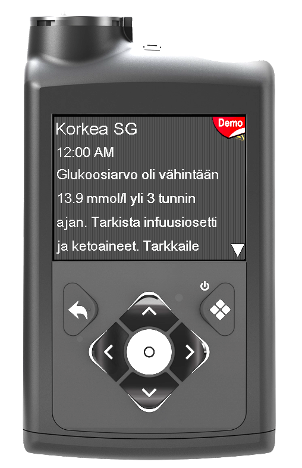
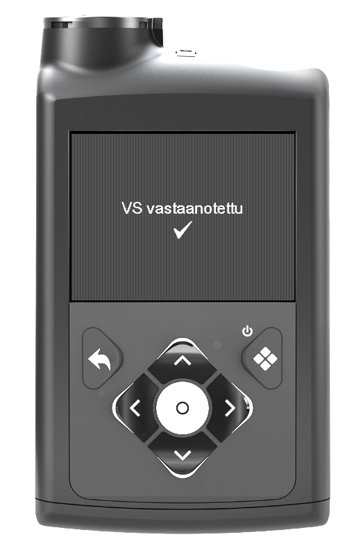
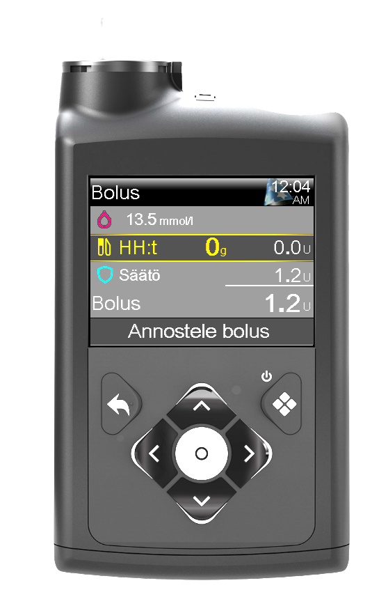
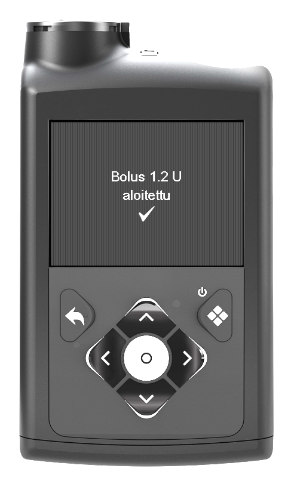

📈 Korkea verensokeri
Korkea verensokeri tarkoittaa tilannetta, jossa sensorin glukoosi (SG) on tavoitetason yläpuolella.
Korkean tilanteessa tarkistetaan ensin, että insuliinin kulku toimii normaalisti.
⚠️ Korkean verensokerin hälytys
Kun korkean verensokerin hälytys tulee, tarkista tilanne.

🔎 Tarkista ensin
Kanyyli ja letku
- Tarkista, että kanyyli on paikoillaan pakarassa.
- Varmista, ettei kanyyli ole irronnut.
- Tarkista, että letku on kunnolla kiinni.
- Varmista, ettei letku ole irti, taittunut tai vaurioitunut.
Tarkista verensokeritilanne
- Tarkista sensorin glukoosi (SG).
- Tarkista trendinuolet.
- Tarkista aktiivinen insuliini.
- Arvioi lapsen vointi.
💧 Korkean aikana
Jos verensokeri on korkea (esimerkiksi yli 15 mmol/l):
- Anna lapselle vettä.
- Kevyt liikkuminen voi auttaa verensokerin laskussa, jos lapsen vointi on hyvä.
- Seuraa sensorin glukoosia ja trendinuolta.
🧪 Ketoarvot
Mikäli verensokeri on yli 15 mmol/l yli 2 tuntia, tarkista ketoarvot.
| Ketoarvo | Toiminta |
|---|---|
| 0,0–0,2 mmol/l | Normaali. Jatka verensokerin seurantaa. |
| 0,3–0,5 mmol/l | Seuraa tilannetta ja varmista riittävä juominen. |
| 0,6–1,5 mmol/l | Koholla. Tarkista insuliinin kulku, kanyyli ja seuraa tilannetta. |
| 1,6–3,0 mmol/l | Selvästi koholla. Ota yhteys huoltajaan tilanteen arviointia varten. |
| Yli 3,0 mmol/l | Korkea ketoarvo. Ota välittömästi yhteys huoltajaan. |
💉 0 g korjaus
0 g korjausta käytetään tilanteessa, jossa verensokeri on korkea ja aktiivista insuliinia on vähän.
- Verensokeri yli 15 mmol/l
- tai verensokeri yli 12 mmol/l ja trendinuolet osoittavat ylöspäin
- Aktiivinen insuliini alle 0,5 yksikköä
Ennen 0 g korjausta tarkista, että kanyyli ja insuliinin kulku toimivat normaalisti.
1. Mittaa verensokeri
Mittaa verensokeri sormenpäämittarilla.
2. Lähetä verensokeriarvo pumpulle
Lähetä mitattu verensokeriarvo verensokerimittarilta pumpulle.
3. Hyväksy vastaanotettu verensokeriarvo
Pumppu näyttää verensokerimittarilta vastaanotetun arvon.
Hyväksy vastaanotettu verensokeriarvo pumpulla.

4. Tee 0 g korjaus
Siirry insuliinivalikkoon ja valitse bolus.


Varmista, että hiilihydraatit ovat 0 g.
Kyseessä on korkean verensokerin korjaus, ei ateriabolus.

5. Varmista onnistuminen
Tarkista, että bolus on hyväksytty ja annostelu onnistui.

🚑 Ota yhteys huoltajaan, jos:
- Lapsi oksentaa.
- Lapsi on poikkeuksellisen väsynyt.
- Lapsen vointi huononee.
- Ketoarvot ovat koholla.
- Korkea verensokeri ei korjaannu.
- Tilanne huolestuttaa.
✅ Muista
- Tarkista ensin insuliinin kulku.
- Tarkista SG, trendinuolet ja aktiivinen insuliini.
- Anna vettä korkean aikana.
- Tarkista ketoarvot pitkittyneessä korkeassa.
- Tee 0 g korjaus oikeassa tilanteessa.
- Ota yhteys huoltajaan, jos yllä olevat tilanteet täyttyvät.